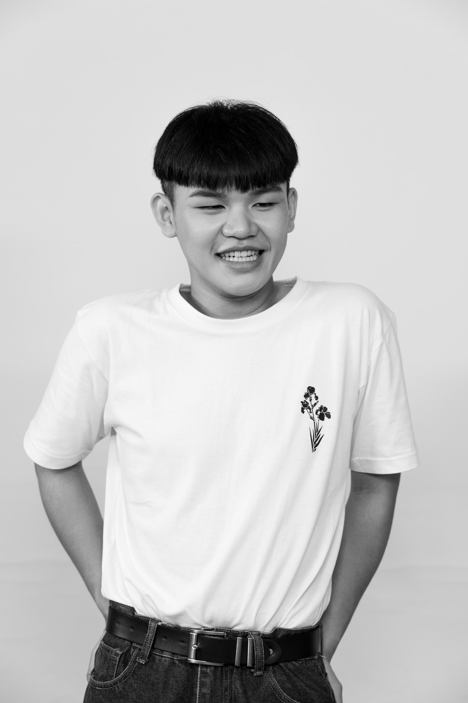

TAIPEI · IMAGE / PHOTOGRAPHY / SYSTEMS
影像工作者·系統工程師·Frank Lin
我在影像裡工作——從音樂錄影帶的副導與導演助理，到舞台與街舞的現場攝影， 再到行為藝術的策展。習慣順著現場的光走，讓畫面靠近電影，而不是紀錄。
我也自己把系統搭起來：NAS、Docker、內部工具，以及 AI 工作流。拍攝現場與伺服器， 是同一套標準——穩定、可重複、能交付。
導演助理 ／ 剪接後期
現場拍攝 ／ 形象片
Partiii Dance Studio 攝影統籌——舞蹈教室官方帳號之影像皆由其拍攝。
政府標案 ／ 音樂會影像
人像 · 舞蹈 · 舞台 · 運動 · 實驗片 · 幀
自架服務 · 內部系統 · AI 工作流
從需求分析到 API 與系統邏輯，開發 ERP、審片平台、器材租借等內部工具並長期維運。
設計多 Agent 分工、派發、執行與回報的流程；整合 Ollama、OpenRouter、Qwen 等 LLM 服務。
把重複性工作轉成自動化流程：專案建立、檔案整理、命名、任務派發與後製流程。
Windows／WSL2／Docker／NVIDIA GPU 環境建置，部署 Local LLM、Open WebUI 等服務。
※ 部分系統為公司專案，內容以對方要求為準，不公開細節。

國立臺北藝術大學電影創作學系 就讀（主修電影攝影）
目前就讀國立臺北藝術大學電影創作學系，主修電影攝影。自 2019 年起投入攝影與影像工作， 累積約七年實務經驗，工作範圍涵蓋 MV、廣告、品牌形象、短影音、活動紀錄與劇情影像。
曾任副導、導演助理、DIT、場記、Timecode與後期相關職務，熟悉劇組現場運作與完整製作流程； 現任 Partiii Dance Studio 攝影統籌。鏡頭之外，自架 NAS 與 Docker 服務， 開發 ERP、審片平台、器材租借系統，並把 AI 工作流接進影像製作流程。